Alan Turing is known mathematician who laid the foundations of what we now
call a computer we now call a computer, thanks to the Turing machine he created
to Turing machine he created to decipher enigma. But he also Morphogenesis, without
which this field would probably not exist. would probably not exist.
From this, I decided to create a pair of glasses in homage to Alan Turing using morphogenesis principles (strange attractors, reaction-diffusion). I found it interesting to develop an object that paid tribute to him by highlighting an important current practice that doesn't exist thanks to him and that isn't directly linked to his name, unlike the 'computer'.
Process : Strange attractor programming(2D, 3D) > 3D interpretation > Shape drawing > Shape assembly > Modelling > Applying the model
Application of the reaction-diffusion as texture.
 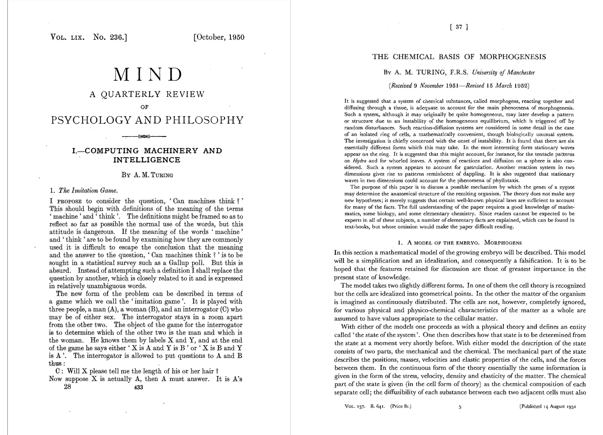
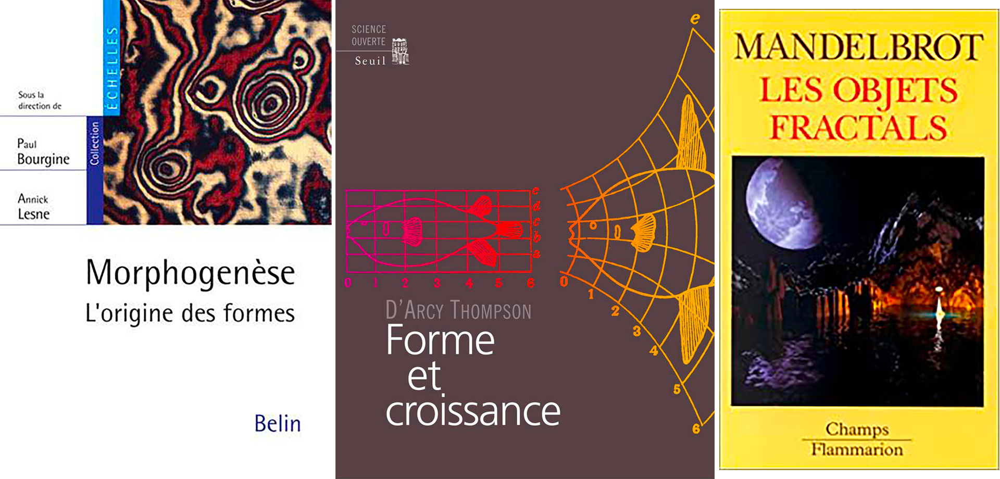
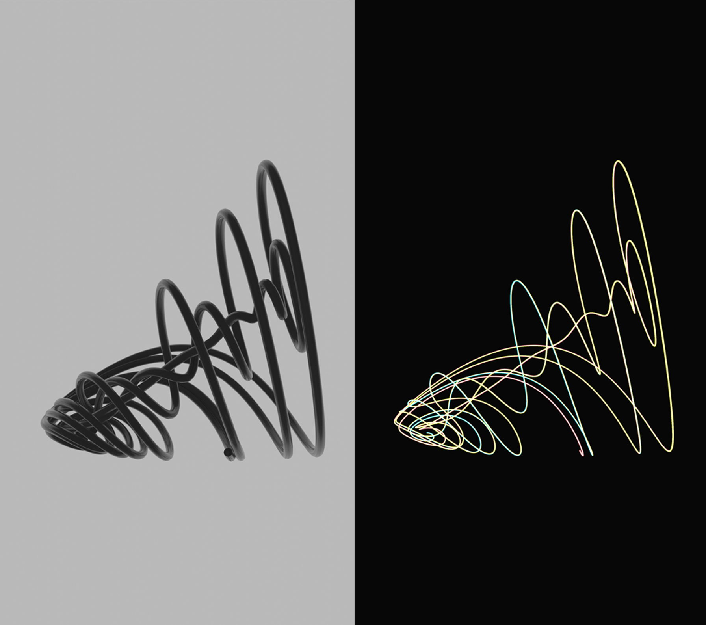
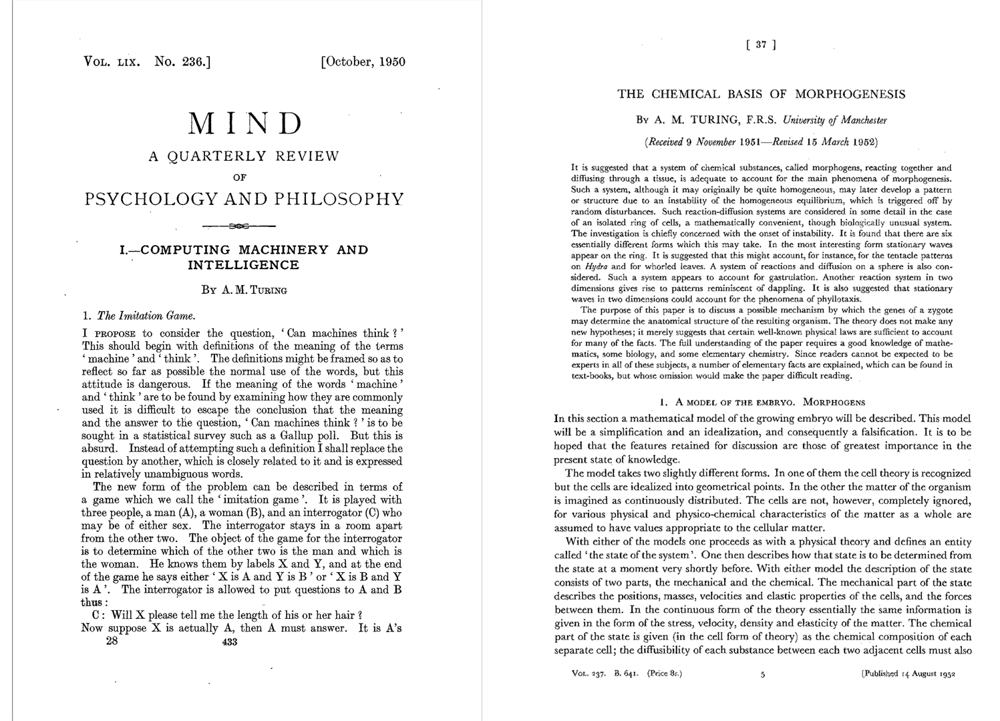
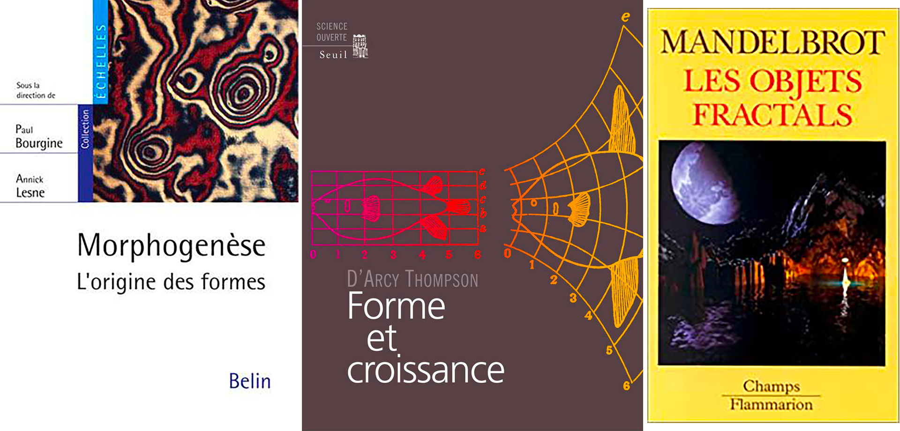
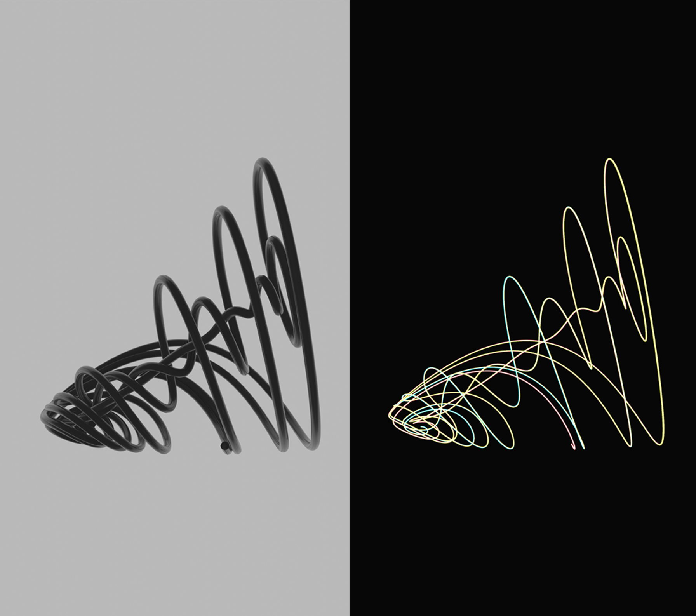
 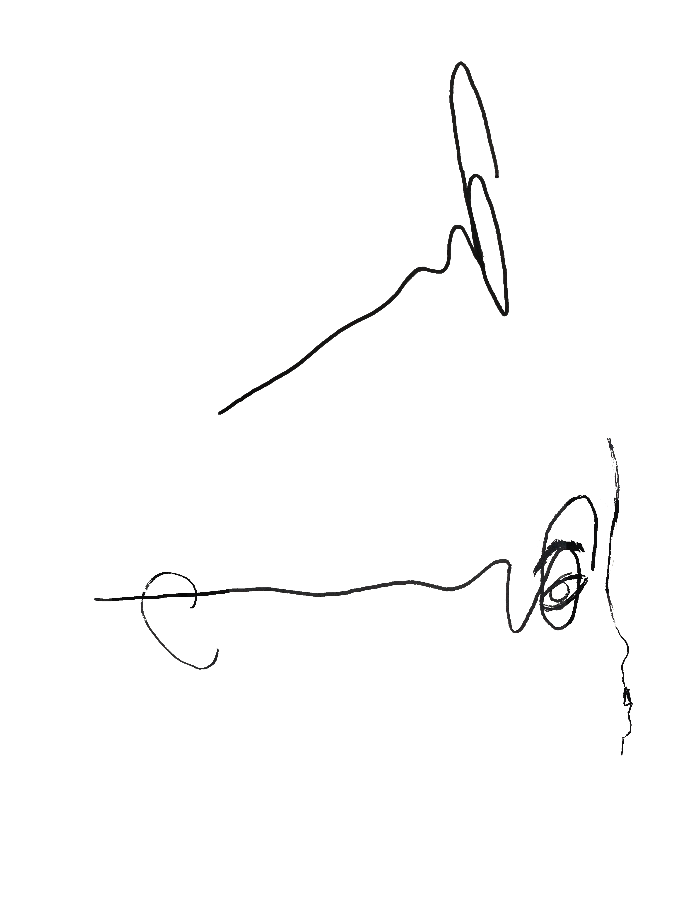
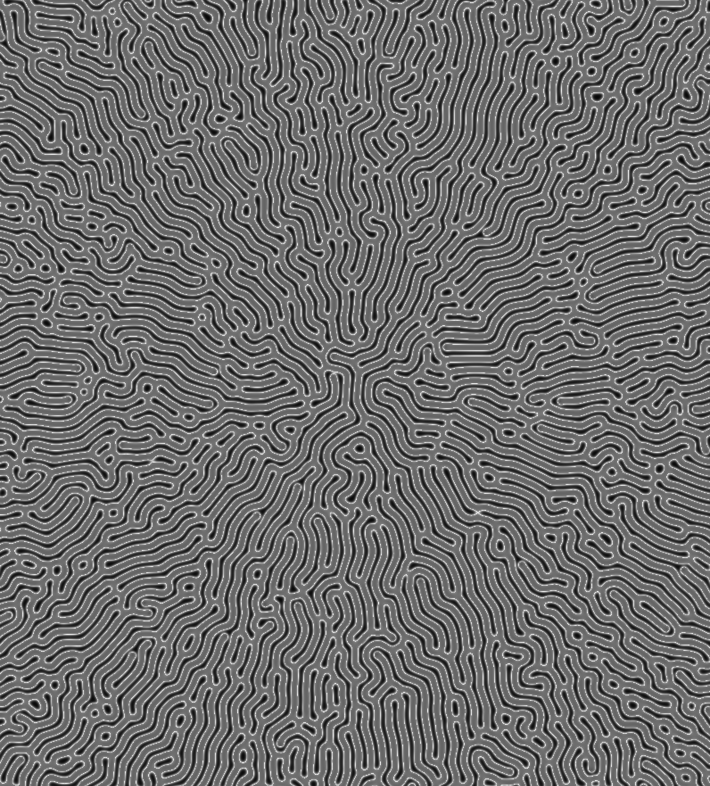
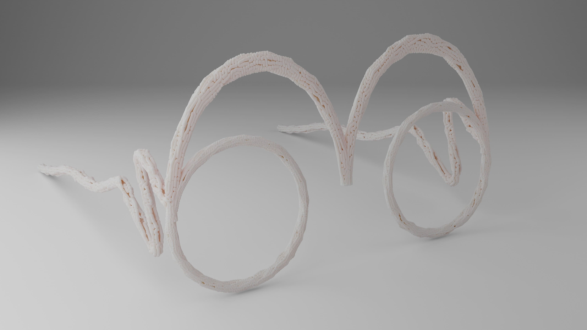
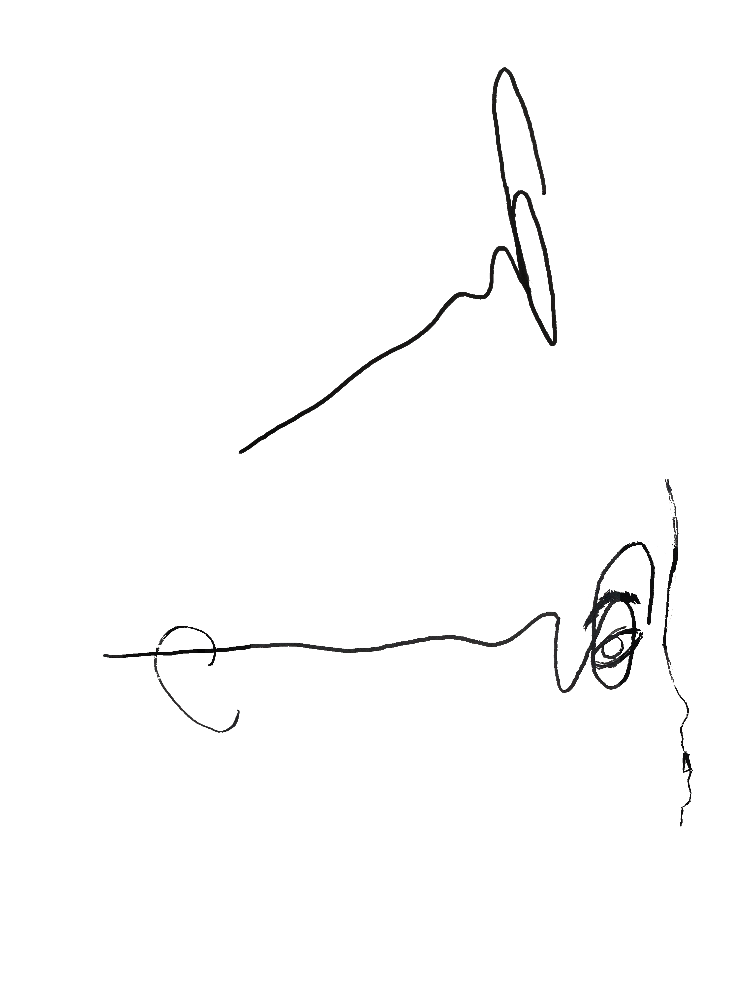
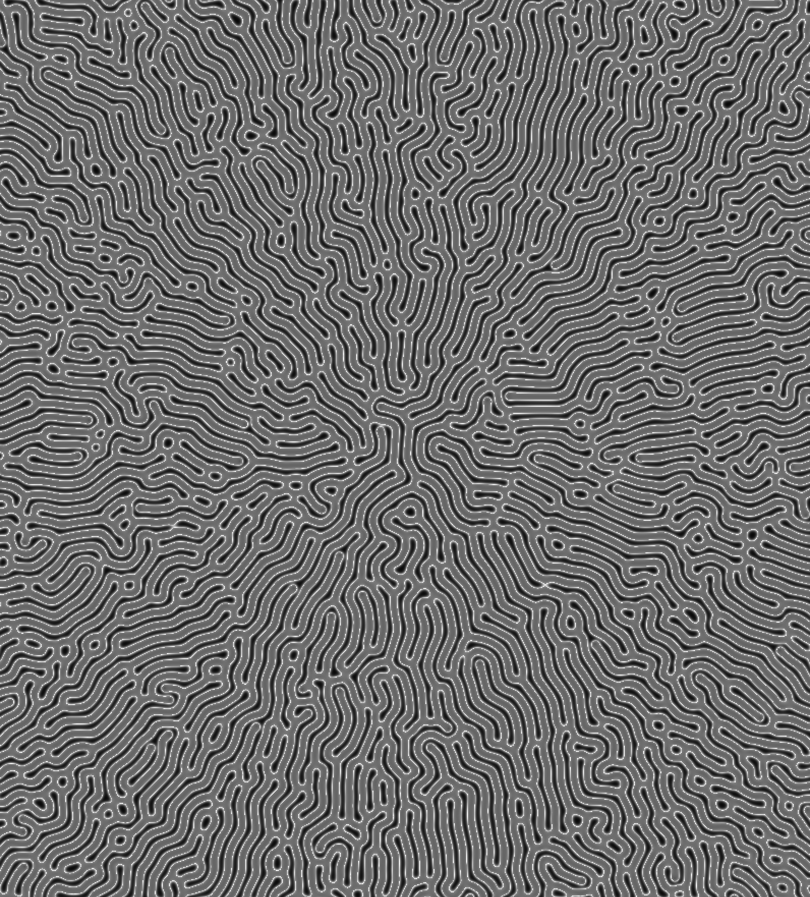
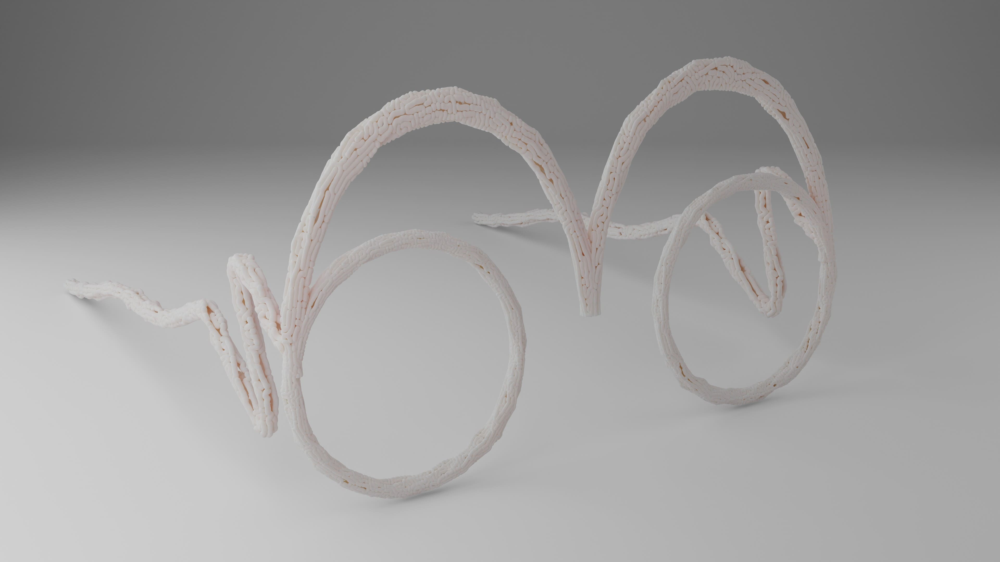